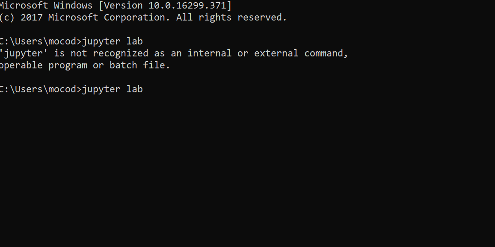
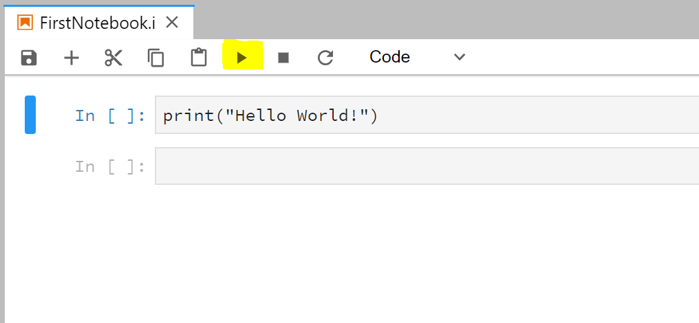

Python 101
Task 1 - Anaconda Installation
- Installing Anaconda (which includes Jupyter)
- Open Jupyter Lab via the Terminal or Command Line 
- Create a notebook and type code as below to print "Hello Word!".
Click the play button (highlighted) to execuate the python code.

- Learn More about Anaconda
Task 2 - Read Textbook
Download
● Chapter 1
● Chapter 2
● Chapter 3
● Chapter 5
Task 3 - Follow these coding exercises
Please try this code by yourslef.
Using Python as a Calculator
The interpreter acts as a simple calculator: you can type an expression at it and it will write the value. Expression syntax is straightforward: the operators +, -, * and / work just like in most other languages (for example, Pascal or C); parentheses (()) can be used for grouping. For example:
>>> 2 + 2
4
>>> 50 - 5*6
20
>>> (50 - 5*6) / 4
5.0
>>> 8 / 5 # division always returns a floating point number
1.6
The integer numbers (e.g. 2, 4, 20) have type int, the ones with a fractional part (e.g. 5.0, 1.6) have type float. Division (/) always returns a float. To do floor division and get an integer result (discarding any fractional result) you can use the // operator; to calculate the remainder you can use %:
>>> 17 / 3 # classic division returns a float
5.666666666666667
>>>
>>> 17 // 3 # floor division discards the fractional part
5
>>> 17 % 3 # the % operator returns the remainder of the division
2
>>> 5 * 3 + 2 # result * divisor + remainder
17
With Python, it is possible to use the ** operator to calculate powers
>>>
>>> 5 ** 2 # 5 squared
25
>>> 2 ** 7 # 2 to the power of 7
128
The equal sign (=) is used to assign a value to a variable. Afterwards, no result is displayed before the next interactive prompt: There is full support for floating point; operators with mixed type operands convert the integer operand to floating point:
>>> width = 20
>>> height = 5 * 9
>>> width * height
900
>>> 4 * 3.75 - 1
14.0
Python String
Besides numbers, Python can also manipulate strings, which can be expressed in several ways. They can be enclosed in single quotes ('...') or double quotes ("...") with the same result. \ can be used to escape quotes:
>>> 'spam eggs' # single quotes
'spam eggs'
>>> 'doesn\'t' # use \' to escape the single quote...
"doesn't"
>>> "doesn't" # ...or use double quotes instead
"doesn't"
>>> '"Yes," he said.'
'"Yes," he said.'
>>> "\"Yes,\" he said."
'"Yes," he said.'
>>> '"Isn\'t," she said.'
'"Isn\'t," she said.'
If you want to concatenate variables or a variable and a literal, use +:
>>> prefix = 'Py'
>>> prefix + 'thon123'
'Python123'
Strings can be indexed (subscripted), with the first character having index 0. There is no separate character type; a character is simply a string of size one:
>>> word = 'Python'
>>> word[0] # character in position 0
'P'
>>> word[5] # character in position 5
'n'
Indices may also be negative numbers, to start counting from the right:
>>> word[-1] # last character
'n'
>>> word[-2] # second-last character
'o'
>>> word[-6]
'P'
In addition to indexing, slicing is also supported. While indexing is used to obtain individual characters, slicing allows you to obtain substring:
>>> word[0:2] # characters from position 0 (included) to 2 (excluded)
'Py'
>>> word[2:5] # characters from position 2 (included) to 5 (excluded)
'tho'
Note how the start is always included, and the end always excluded. This makes sure that s[:i] + s[i:] is always equal to s:
>>> word[:2] + word[2:]
'Python'
>>> word[:4] + word[4:]
'Python'
Slice indices have useful defaults; an omitted first index defaults to zero, an omitted second index defaults to the size of the string being sliced.
>>> word[:2] # character from the beginning to position 2 (excluded)
'Py'
>>> word[4:] # characters from position 4 (included) to the end
'on'
>>> word[-2:] # characters from the second-last (included) to the end
'on'
Python List
Python knows a number of compound data types, used to group together other values. The most versatile is the list, which can be written as a list of comma-separated values (items) between square brackets. Lists might contain items of different types, but usually the items all have the same type.
>>> squares = [1, 4, 9, 16, 25]
>>> squares
[1, 4, 9, 16, 25]